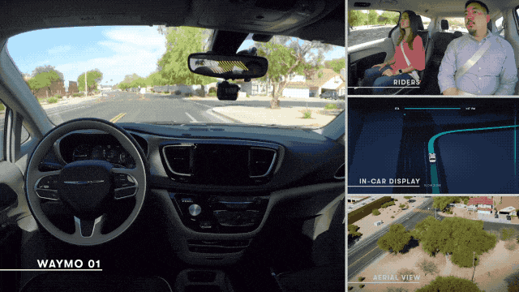

想象一下，坐在车里悠闲地吃着火锅、哼着小曲，甚至惬意地搓着麻将，将驾驶任务完全交给汽车。这是自动驾驶描绘的美妙蓝图。
理想照进现实仍需时间。就目前技术而言，机器仅能部分替代人类功能，仍需驾驶员随时保持警惕以应对突发状况。

智能驾驶定义： 系统通过车载传感器感知环境，控制车辆转向和速度，实现安全、可靠的行驶 1。
根据 GB/T 40429-2021 等标准，自动驾驶被定义为 L0~L5 六个等级 2。
| 级别 | 名称 | 驾驶员角色 | 车辆功能 |
|---|---|---|---|
| L0 - L2 | 辅助驾驶 | 驾驶员是主体，必须全程监控路况并随时准备接管。 | 提供预警、纵向控制（如ACC）或横向辅助（如LKA）。 |
| L3 | 有条件自动驾驶 | 在特定条件下由系统驾驶，但需在请求时接管。 | 在特定场景（如高速公路）下完成全部动态驾驶任务。 |
| L4 - L5 | 高度/完全自动驾驶 | 驾驶员基本解放（L4）甚至无需驾驶员（L5）。 | 限定场景下的全权驾驶或全场景下的完全无人驾驶。 |
智能驾驶系统是一个由感知、决策到执行的完整闭环结构。
作为车辆的“眼睛”，负责采集并处理周边及内部信息。
确保车辆在复杂环境中的厘米级导航与定位。
作为“大脑”，负责生成安全路径并做出驾驶行为决策。
作为“手脚”，将决策指令通过电信号转化为实际动作。
随着自动化等级的提升，法律责任的主体正经历从“人”到“系统”的深刻变革。
法律界定通常以 L3 级作为“辅助驾驶”与“自动驾驶”的分水岭 1 2。
| 技术级别 | 责任主体 | 法律要点分析 |
|---|---|---|
| L0 - L2 (辅助) | 人类驾驶员 | 系统仅起辅助作用。根据相关法规，驾驶员必须全程监控，若未尽到接管义务将承担主要责任 3 8。 |
| L3 (有条件) | 混合责任 | 在特定条件下系统控制车辆。根据国家最新试点通知，若系统激活期间因车辆缺陷致灾，责任倾向于向车企或系统开发者转移 4。 |
| L4 - L5 (高度) | 车辆/运营方 | 无需人工干预。在限定或全场景下，事故责任将由汽车制造商或 Robotaxi 的运营主体承担 3 4。 |
自动驾驶车辆是海量敏感数据的收集器，必须严守国家法律红线。
深度学习驱动的决策过程不透明，导致在发生事故后很难从法律层面判定“算法是否存在过错”，影响定责的可信任度 7。
在极端紧急情况下（如典型的“电车难题”），算法应当优先保护车内乘客还是车外行人？这一伦理准则亟待通过立法予以明确 7。
如果您对本项目或智能驾驶法律法规有任何想法，欢迎留言反馈。
智能驾驶正从技术验证阶段迈向更大规模的商业化应用与法规完善期。
[1] 国家市场监督管理总局, 国家标准化管理委员会. (2021). GB/T 40429-2021《汽车驾驶自动化分级》.
[2] SAE International. (2021). SAE J3016: Taxonomy and Definitions for Terms Related to Driving Automation Systems for On-Road Motor Vehicles.
[3] 中国汽车工程学会. (2020). 《智能网联汽车技术路线图 2.0》.
【法律法规与政策文件】[4] 深圳市人民代表大会常务委员会. (2022). 《深圳经济特区智能网联汽车管理条例》.
[5] 全国人民代表大会常务委员会. (2021). 《中华人民共和国个人信息保护法》.
[6] 工业和信息化部等四部委. (2023). 《关于开展智能网联汽车准入和上路通行试点工作的通知》.
[7] 国家互联网信息办公室等. (2021). 《汽车数据安全管理若干规定（试行）》.
【研究报告与文献资料】[8] 行业深度报告. 智能驾驶技术现状、发展及产业链分析.
[9] 交通安全科普. 智能驾驶≠无人驾驶！如何正确理解和使用.